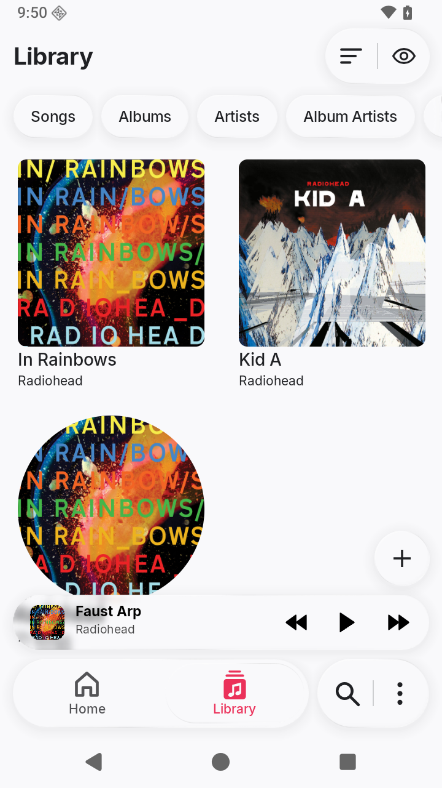
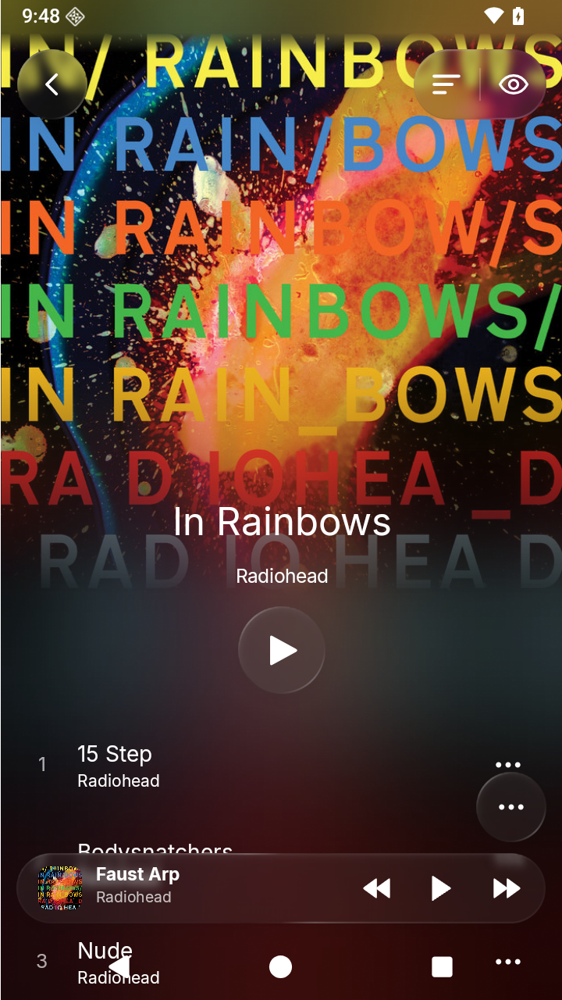
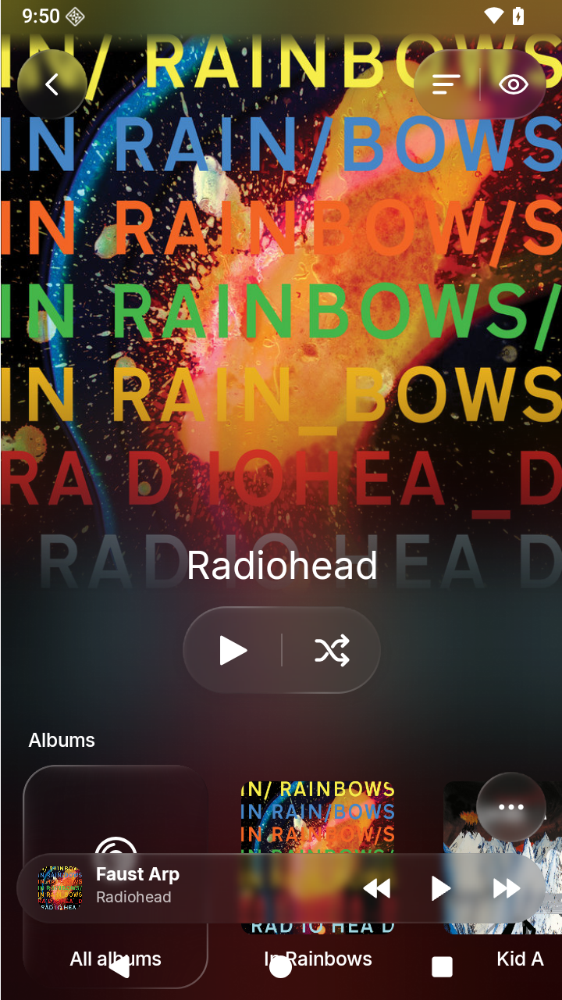
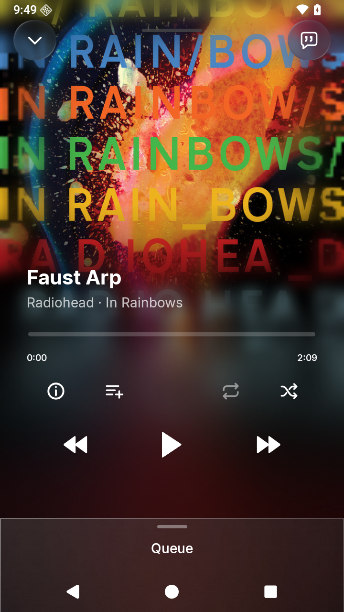
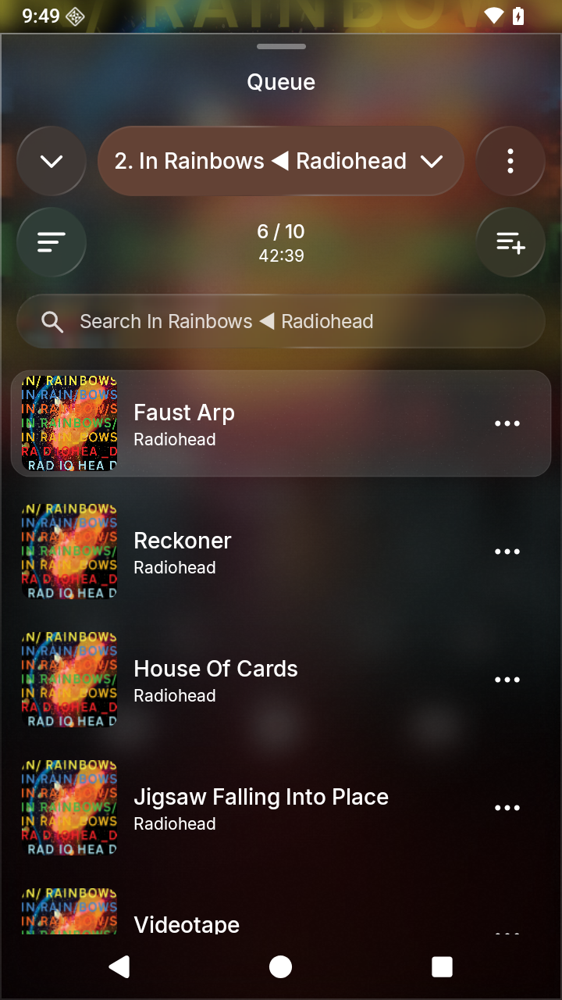
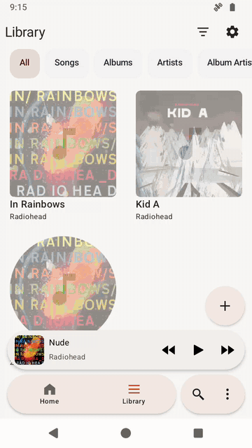

Localica
An Android player for music stored on your device. Browse folders, albums and artists, organize playlists, and keep separate listening queues.
Saved queues, configurable navigation, bulk tag/artwork editing, local synced lyrics, and background playback. No account or internet access. Liquid Glass floating controls complement a frosted Queue drawer.
Requires Android 8+. Supports MP3 and AAC/M4A, plus WAV, FLAC, Ogg, and Opus where the device provides a decoder. Songs advance through the active queue.
Download development APKs · Build and test · Project plan · Report an issue
Documentation website · Interface contract · Contributing





Watch a short navigation preview

Previews captured in v0.29.0 using silent demo files. Album artwork and track names: Radiohead’s In Rainbows and Kid A. Artwork belongs to its respective rights holders and is not included in the app.